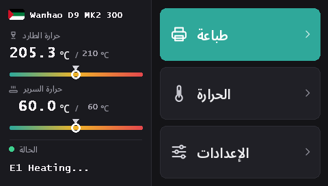

تثبيت برنامج الشاشة اللمسية في Duplicator 9
كل طرازات D9، من MK1 إلى MK3، تستخدم الشاشة اللمسية نفسها DWIN T5 (480 × 272). مع هذه البرامج الثابتة تعمل الشاشة بـ DGUS Reloaded 2.0، واجهتنا الجديدة بـ 16 لغة، وتُثبَّت من بطاقة microSD.
تنزيل DWIN_SET.zip (DGUS Reloaded 2.0)
ما الذي يضيفه DGUS Reloaded 2.0
- 16 لغة: English، Français، Deutsch، Español، Italiano، Português، Nederlands، Polski، Türkçe، Русский، العربية، हिन्दी، 中文، 日本語، 한국어، Bahasa Indonesia. المس العلم بجانب اسم الطابعة في الشاشة الرئيسية لتغيير اللغة؛ وتتذكر الطابعة اختيارك.
- صفحة لحساس الخيط: الإعدادات ← الخيط ← حساس الخيط. راجع حساس الخيط.
- سطر حالة يبقى ظاهرًا: آخر رسالة، Ready مثلًا، تبقى على الشاشة بدل أن تختفي بعد 30 ثانية.
- مؤشرات لدرجة الحرارة للفوهة والسرير، مع تحديد درجة الحرارة المستهدفة.
- مظهر جديد لكل الصفحات: سمة داكنة، وأزرار أكبر، ورموز مصوّرة في النوافذ المنبثقة.

1. تهيئة بطاقة microSD
- Windows: كثيرًا ما يرفض Windows 11 التهيئة بنظام FAT32؛ استخدم GUIFormat واضبط حجم وحدة التخصيص على 4096.
- Linux:
sudo mkfs.fat -F 32 -s 8 /dev/sdX1(تحقّق من اسم الجهاز أولًا بالأمرlsblk). - macOS:
sudo newfs_msdos -F 32 -c 8 /dev/diskN(تحقّق بالأمرdiskutil list).
2. نسخ الملفات
فكّ ضغط DWIN_SET.zip وانسخ مجلد DWIN_SET بالكامل إلى جذر البطاقة.
3. التثبيت
- أطفئ الطابعة وافصلها عن الكهرباء.
- افتح واجهة القاعدة الأمامية للوصول إلى الجهة الخلفية للشاشة، حيث يوجد منفذ microSD الخاص بها.
- أدخل البطاقة وشغّل الطابعة. تُظهر الشاشة التحديث خلال 10 إلى 30 ثانية؛ انتظر حتى تُعيد التشغيل بشكل طبيعي، أي من 1 إلى 3 دقائق في المجمل.
- أطفئ الطابعة، وأخرج البطاقة، وأغلق القاعدة.
يُظهر فيديو Wanhao لتحديث شاشة D9 مكان المنفذ.
من أين أتت
يعيد DGUS Reloaded 2.0 رسم DGUS Reloaded 1.0.3 (من تطوير Desuuuu، ثم Neo2003) صفحةً صفحة. الكود المصدري، والبرنامج الذي يولّد ملفات الشاشة، والترجمات موجودة على GitHub. هل وجدت كلمة خاطئة أو غير موفّقة بلغتك؟ أخبرنا على Discord أو افتح بلاغًا هناك.
للرجوع إلى DGUS Reloaded 1.0.3، مثلًا مع برنامج ثابت أقدم من v2.0.9، ثبّت DWIN_SET_1.0.3.zip بالطريقة نفسها.
الرجوع إلى شاشة Wanhao
لا يعمل برنامج الشاشة من Wanhao إلا مع البرنامج الثابت للوحة الأم من Wanhao. لطراز MK1: ملف الشاشة من الإصدار المطابق في صفحة MK1. لـ MK1 + الطقم وMK2 وMK3: DWIN_SET_MK2.zip. الإجراء نفسه.